Checking rcartocolor for colorblind friendly palettes
Jakub Nowosad
2019-04-28
check_rcartocolor.RmdQuantitative
Colorblind friendly palettes
display_carto_all(type = "quantitative")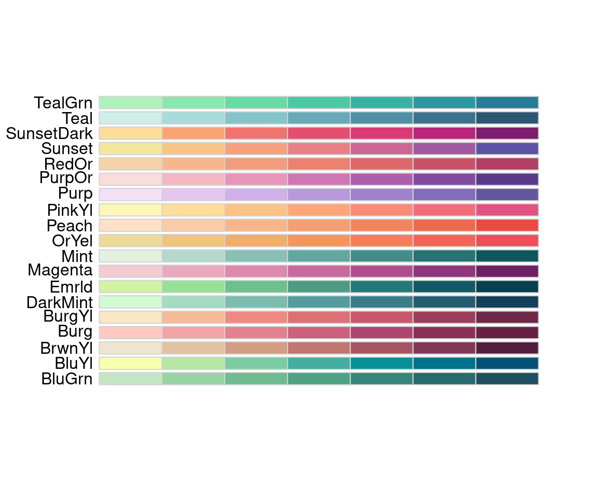
TealGrn
TealGrn = carto_pal(7, "TealGrn")
colorblindcheck::palette_check(TealGrn, plot = TRUE)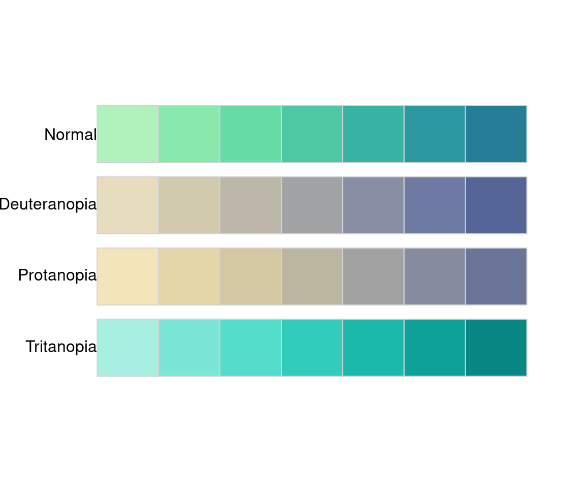
#> name n tolerance ncp ndcp min_dist mean_dist max_dist
#> 1 normal 7 4.525989 21 21 4.525989 20.41736 43.86276
#> 2 deuteranopia 7 4.525989 21 20 4.398525 23.08789 48.81635
#> 3 protanopia 7 4.525989 21 19 3.226824 21.30028 45.50978
#> 4 tritanopia 7 4.525989 21 19 3.791497 13.89019 30.43883Teal
Teal = carto_pal(7, "Teal")
colorblindcheck::palette_check(Teal, plot = TRUE)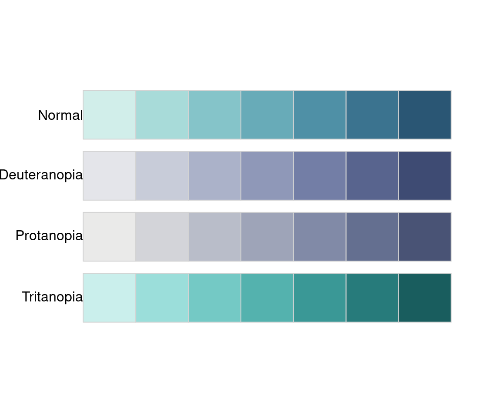
#> name n tolerance ncp ndcp min_dist mean_dist max_dist
#> 1 normal 7 6.862176 21 21 6.862176 23.00297 50.28819
#> 2 deuteranopia 7 6.862176 21 20 6.820521 23.35602 52.25072
#> 3 protanopia 7 6.862176 21 19 5.794659 22.32510 49.73011
#> 4 tritanopia 7 6.862176 21 19 6.305160 21.36228 47.27802SunsetDark
SunsetDark = carto_pal(7, "SunsetDark")
colorblindcheck::palette_check(SunsetDark, plot = TRUE)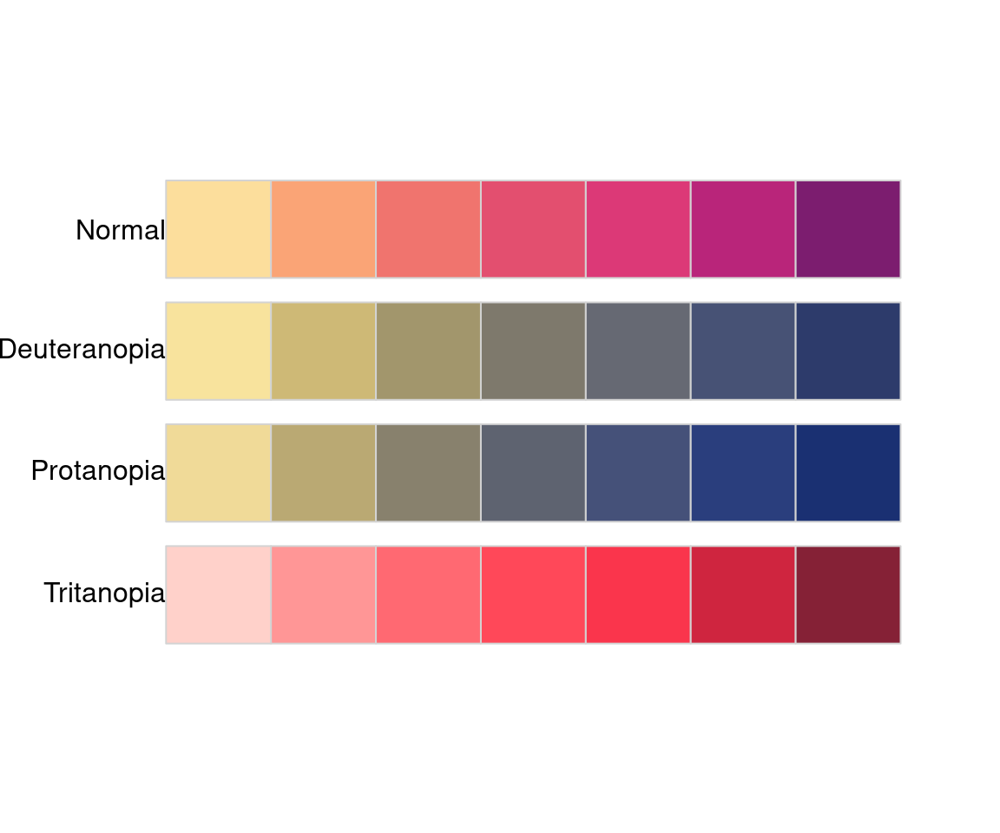
#> name n tolerance ncp ndcp min_dist mean_dist max_dist
#> 1 normal 7 6.671338 21 21 6.671338 31.85827 71.68336
#> 2 deuteranopia 7 6.671338 21 21 8.110355 32.82955 72.40930
#> 3 protanopia 7 6.671338 21 20 4.376758 35.09987 78.01044
#> 4 tritanopia 7 6.671338 21 19 3.160708 21.97365 52.76674Sunset
Sunset = carto_pal(7, "Sunset")
colorblindcheck::palette_check(Sunset, plot = TRUE)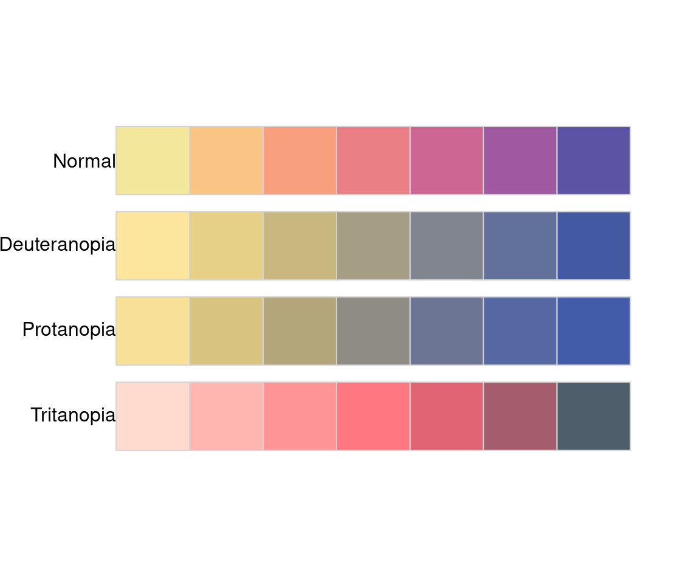
#> name n tolerance ncp ndcp min_dist mean_dist max_dist
#> 1 normal 7 13.55652 21 21 13.556520 35.18554 67.75598
#> 2 deuteranopia 7 13.55652 21 16 5.026300 31.07865 64.53296
#> 3 protanopia 7 13.55652 21 16 4.825152 31.41276 63.32528
#> 4 tritanopia 7 13.55652 21 15 6.191345 24.72662 47.49271RedOr
RedOr = carto_pal(7, "RedOr")
colorblindcheck::palette_check(RedOr, plot = TRUE)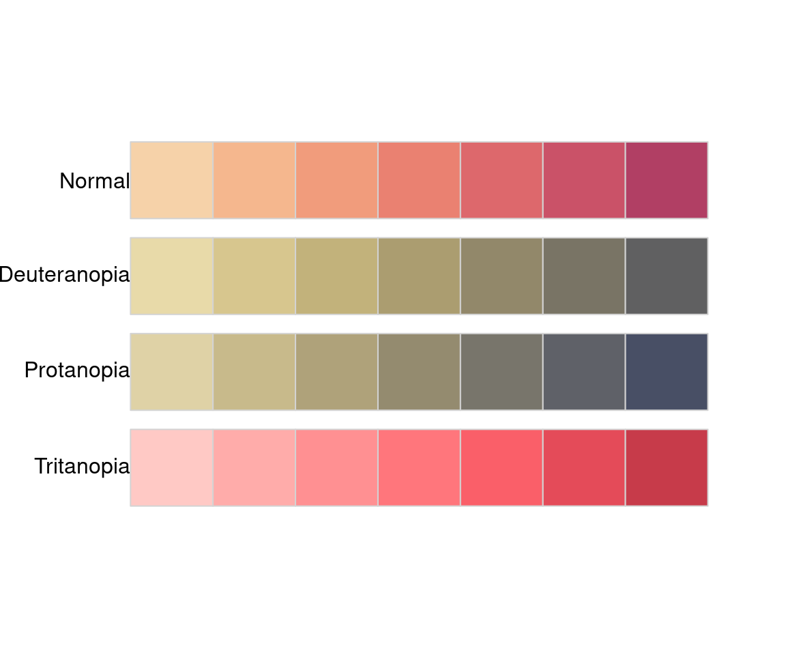
#> name n tolerance ncp ndcp min_dist mean_dist max_dist
#> 1 normal 7 8.223173 21 21 8.223173 21.81904 46.51079
#> 2 deuteranopia 7 8.223173 21 17 5.090167 19.42584 42.33235
#> 3 protanopia 7 8.223173 21 19 6.069989 24.35539 53.13054
#> 4 tritanopia 7 8.223173 21 15 4.744827 15.67691 34.59061PurpOr
PurpOr = carto_pal(7, "PurpOr")
colorblindcheck::palette_check(PurpOr, plot = TRUE)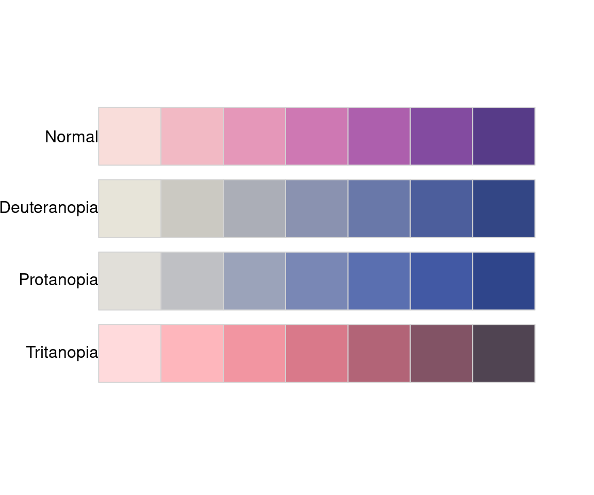
#> name n tolerance ncp ndcp min_dist mean_dist max_dist
#> 1 normal 7 9.80217 21 21 9.802170 26.51601 56.36869
#> 2 deuteranopia 7 9.80217 21 19 6.489357 27.04503 58.77340
#> 3 protanopia 7 9.80217 21 17 7.022124 25.84706 57.27557
#> 4 tritanopia 7 9.80217 21 19 7.790749 25.08475 52.94817Purp
Purp = carto_pal(7, "Purp")
colorblindcheck::palette_check(Purp, plot = TRUE)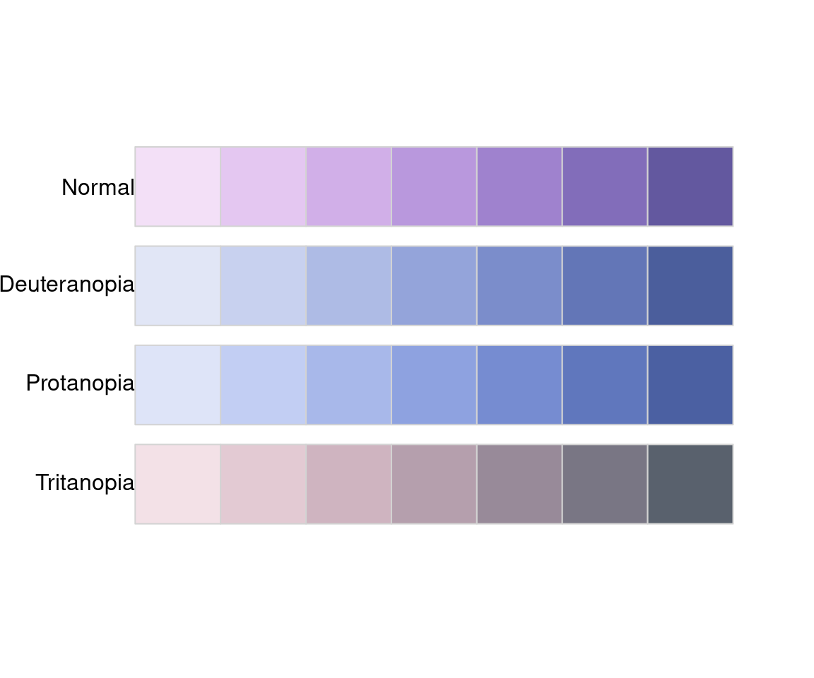
#> name n tolerance ncp ndcp min_dist mean_dist max_dist
#> 1 normal 7 6.622445 21 21 6.622445 19.66350 42.97008
#> 2 deuteranopia 7 6.622445 21 20 6.506694 19.43535 42.92977
#> 3 protanopia 7 6.622445 21 19 6.401001 18.71164 41.40176
#> 4 tritanopia 7 6.622445 21 18 5.545532 19.52364 42.49747PinkYl
PinkYl = carto_pal(7, "PinkYl")
colorblindcheck::palette_check(PinkYl, plot = TRUE)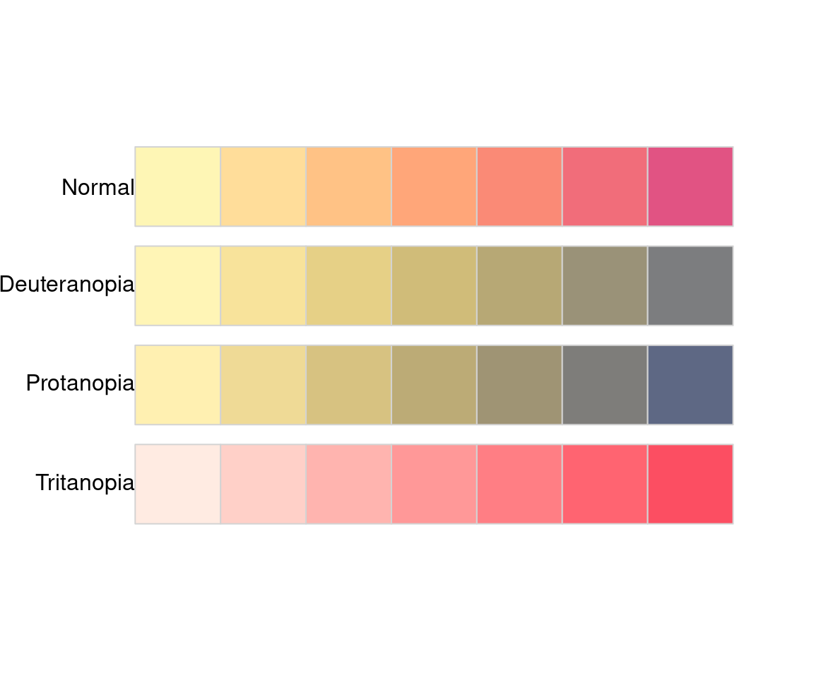
#> name n tolerance ncp ndcp min_dist mean_dist max_dist
#> 1 normal 7 8.848948 21 21 8.848948 26.35793 55.69140
#> 2 deuteranopia 7 8.848948 21 16 4.344732 17.67579 38.12582
#> 3 protanopia 7 8.848948 21 18 5.031054 23.61115 51.97669
#> 4 tritanopia 7 8.848948 21 16 3.925215 16.44637 35.10858Peach
Peach = carto_pal(7, "Peach")
colorblindcheck::palette_check(Peach, plot = TRUE)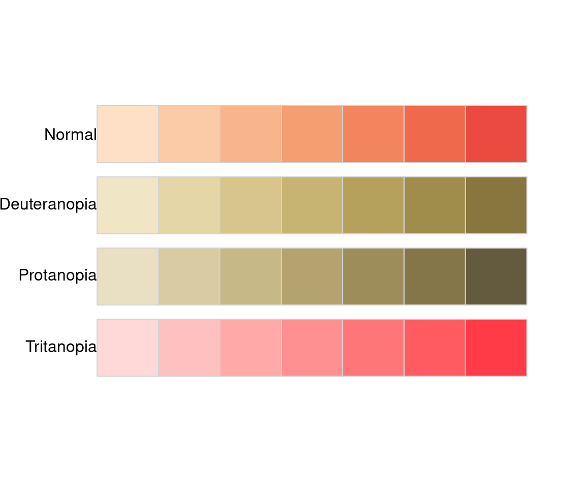
#> name n tolerance ncp ndcp min_dist mean_dist max_dist
#> 1 normal 7 6.16765 21 21 6.167650 16.86487 36.14542
#> 2 deuteranopia 7 6.16765 21 17 4.795192 14.73642 32.52967
#> 3 protanopia 7 6.16765 21 18 5.457174 18.83306 42.03695
#> 4 tritanopia 7 6.16765 21 17 5.244290 15.09498 32.64976OrYel
OrYel = carto_pal(7, "OrYel")
colorblindcheck::palette_check(OrYel, plot = TRUE)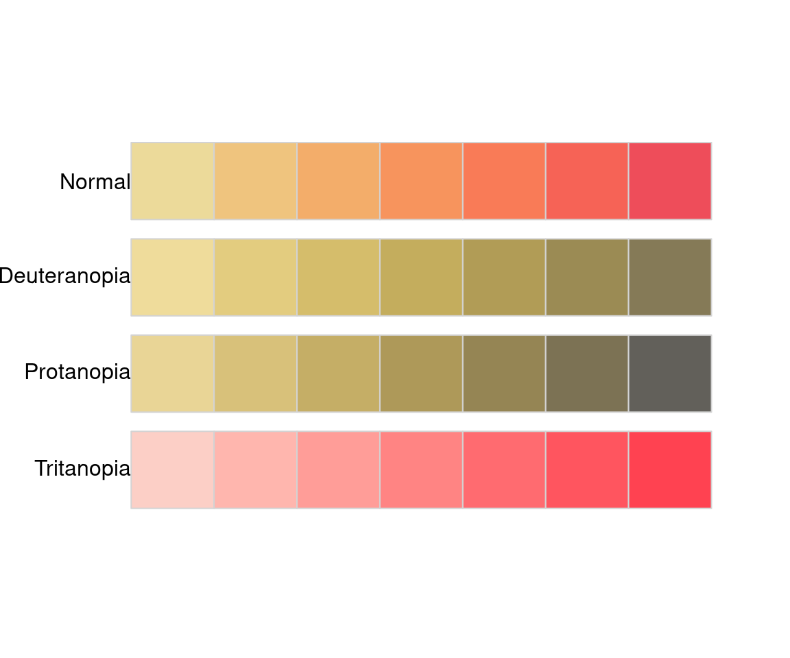
#> name n tolerance ncp ndcp min_dist mean_dist max_dist
#> 1 normal 7 7.124452 21 21 7.124452 21.63788 45.72253
#> 2 deuteranopia 7 7.124452 21 16 3.872968 13.43421 29.03849
#> 3 protanopia 7 7.124452 21 18 5.071612 18.93826 41.14123
#> 4 tritanopia 7 7.124452 21 15 2.988337 13.54421 29.31886Mint
Mint = carto_pal(7, "Mint")
colorblindcheck::palette_check(Mint, plot = TRUE)
#> name n tolerance ncp ndcp min_dist mean_dist max_dist
#> 1 normal 7 8.183972 21 21 8.183972 23.74098 52.40978
#> 2 deuteranopia 7 8.183972 21 20 7.944353 26.01256 59.27671
#> 3 protanopia 7 8.183972 21 19 6.175064 23.12591 51.84658
#> 4 tritanopia 7 8.183972 21 20 7.829163 22.98606 50.37807Magenta
Magenta = carto_pal(7, "Magenta")
colorblindcheck::palette_check(Magenta, plot = TRUE)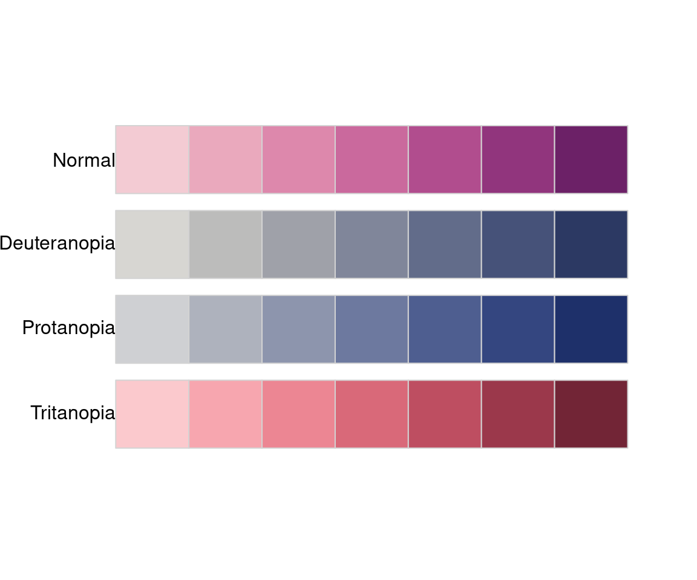
#> name n tolerance ncp ndcp min_dist mean_dist max_dist
#> 1 normal 7 8.634503 21 21 8.634503 24.48868 56.17640
#> 2 deuteranopia 7 8.634503 21 19 6.607899 26.15300 60.85681
#> 3 protanopia 7 8.634503 21 18 7.056053 26.58338 63.62005
#> 4 tritanopia 7 8.634503 21 19 7.663234 23.58890 54.59375Emrld
Emrld = carto_pal(7, "Emrld")
colorblindcheck::palette_check(Emrld, plot = TRUE)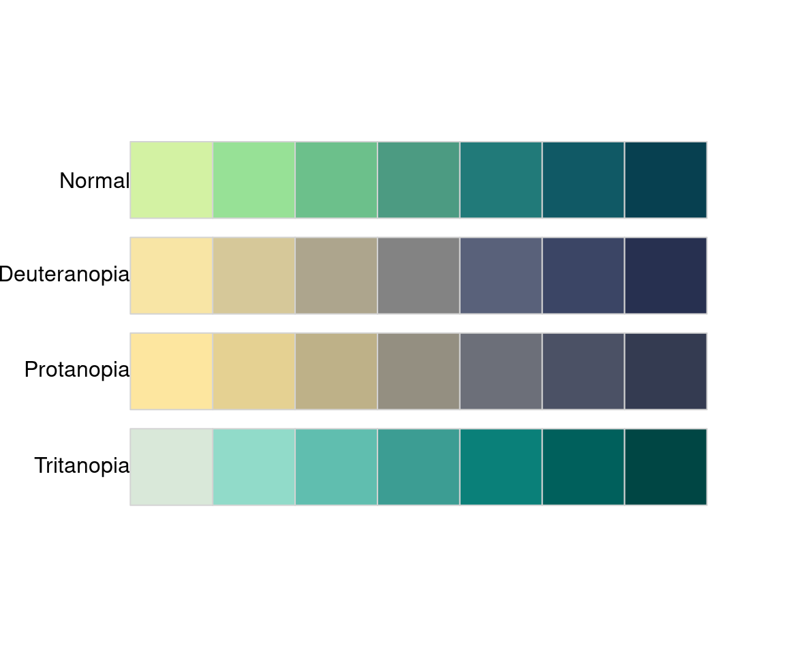
#> name n tolerance ncp ndcp min_dist mean_dist max_dist
#> 1 normal 7 8.861165 21 21 8.861165 31.95098 68.80566
#> 2 deuteranopia 7 8.861165 21 19 6.808786 34.39930 75.81150
#> 3 protanopia 7 8.861165 21 19 5.020024 32.22813 68.78709
#> 4 tritanopia 7 8.861165 21 19 8.423798 27.11655 59.22419DarkMint
DarkMint = carto_pal(7, "DarkMint")
colorblindcheck::palette_check(DarkMint, plot = TRUE)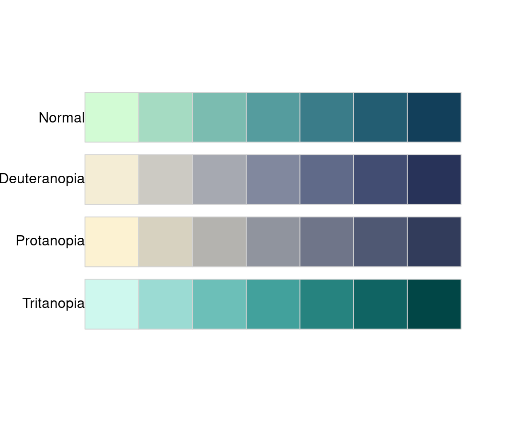
#> name n tolerance ncp ndcp min_dist mean_dist max_dist
#> 1 normal 7 9.080145 21 21 9.080145 29.83704 67.63179
#> 2 deuteranopia 7 9.080145 21 20 8.525020 30.83663 71.06217
#> 3 protanopia 7 9.080145 21 20 8.433580 29.82854 67.26680
#> 4 tritanopia 7 9.080145 21 19 8.231663 26.27631 59.91476BurgYl
BurgYl = carto_pal(7, "BurgYl")
colorblindcheck::palette_check(BurgYl, plot = TRUE)
#> name n tolerance ncp ndcp min_dist mean_dist max_dist
#> 1 normal 7 7.593621 21 21 7.593621 28.83648 64.07379
#> 2 deuteranopia 7 7.593621 21 20 7.497032 27.08729 63.02418
#> 3 protanopia 7 7.593621 21 21 8.745520 29.72173 69.92955
#> 4 tritanopia 7 7.593621 21 19 5.262964 24.46904 56.01174Burg
Burg = carto_pal(7, "Burg")
colorblindcheck::palette_check(Burg, plot = TRUE)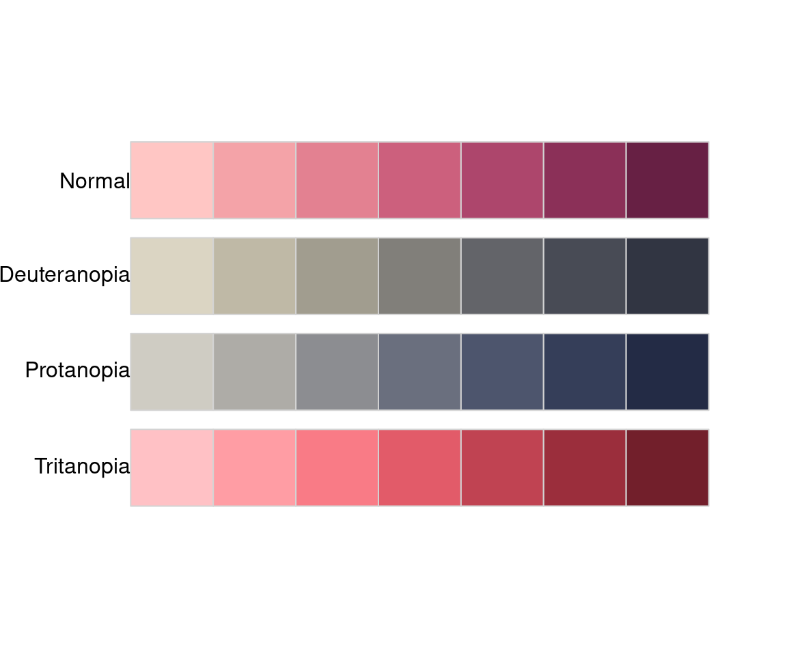
#> name n tolerance ncp ndcp min_dist mean_dist max_dist
#> 1 normal 7 8.15224 21 21 8.152240 25.13510 58.32481
#> 2 deuteranopia 7 8.15224 21 19 7.022004 26.84004 62.92021
#> 3 protanopia 7 8.15224 21 19 6.102614 27.59881 66.68239
#> 4 tritanopia 7 8.15224 21 20 7.651627 23.97162 55.21682BrwnYl
BrwnYl = carto_pal(7, "BrwnYl")
colorblindcheck::palette_check(BrwnYl, plot = TRUE)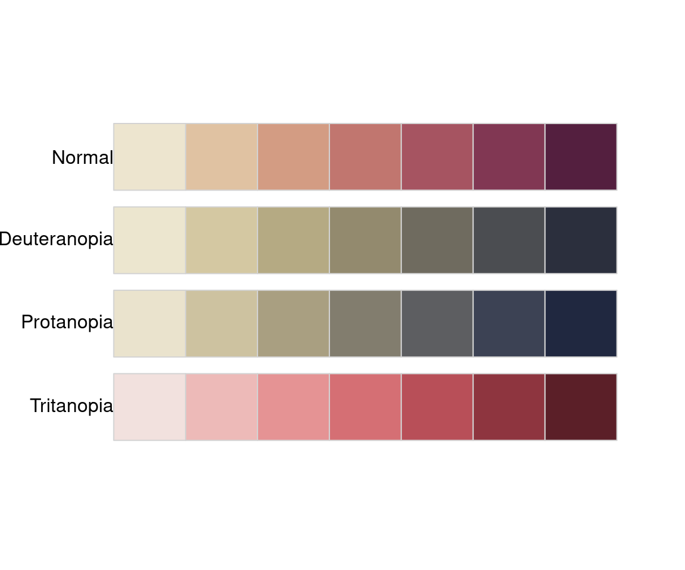
#> name n tolerance ncp ndcp min_dist mean_dist max_dist
#> 1 normal 7 11.09279 21 21 11.092795 32.40575 71.82486
#> 2 deuteranopia 7 11.09279 21 18 8.097624 30.36563 70.01687
#> 3 protanopia 7 11.09279 21 18 8.791251 32.44107 75.32437
#> 4 tritanopia 7 11.09279 21 18 9.451808 28.58091 66.41688BluYl
BluYl = carto_pal(7, "BluYl")
colorblindcheck::palette_check(BluYl, plot = TRUE)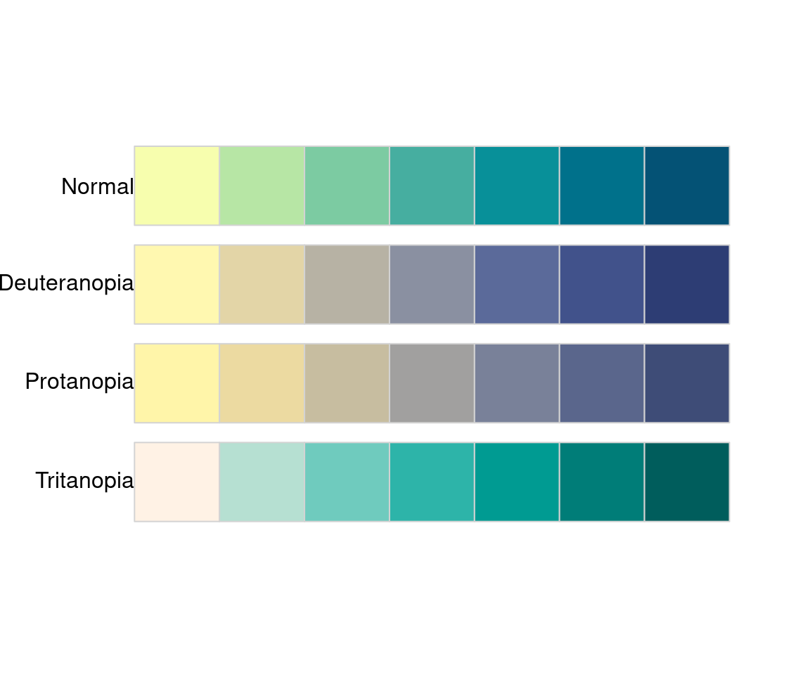
#> name n tolerance ncp ndcp min_dist mean_dist max_dist
#> 1 normal 7 11.39398 21 21 11.393982 31.96155 68.18041
#> 2 deuteranopia 7 11.39398 21 18 7.047420 35.82200 75.53505
#> 3 protanopia 7 11.39398 21 18 6.975523 31.79434 67.34261
#> 4 tritanopia 7 11.39398 21 16 7.717005 25.85021 55.45632BluGrn
BluGrn = carto_pal(7, "BluGrn")
colorblindcheck::palette_check(BluGrn, plot = TRUE)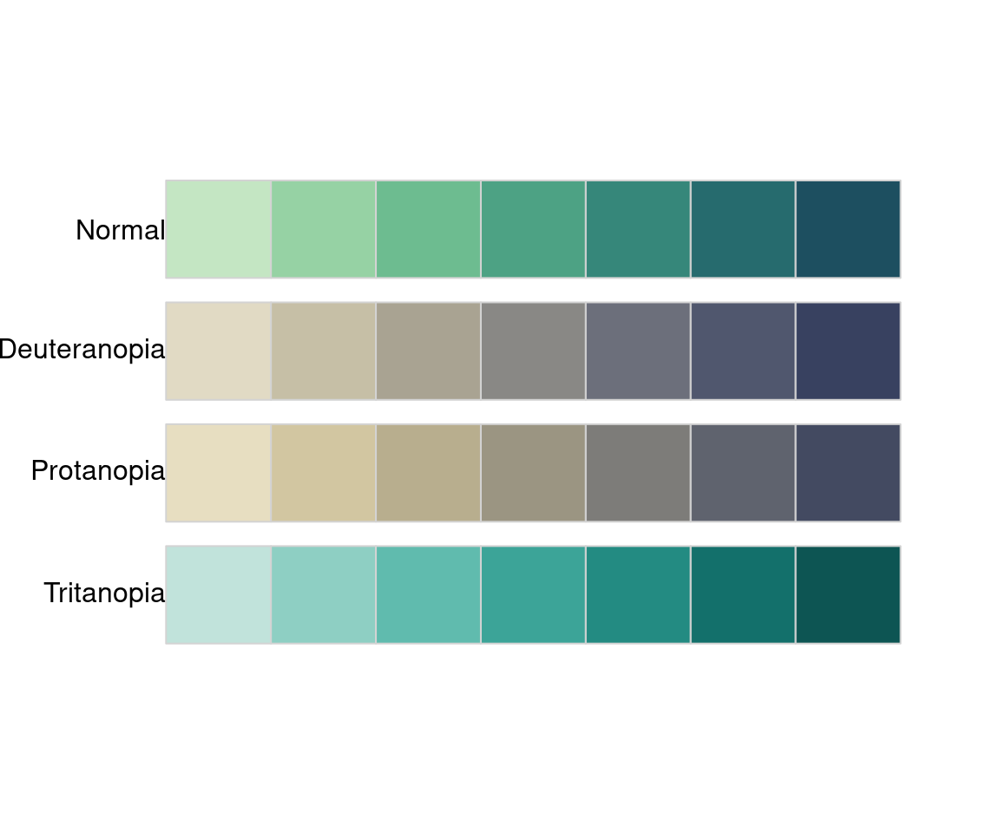
#> name n tolerance ncp ndcp min_dist mean_dist max_dist
#> 1 normal 7 7.171832 21 21 7.171832 25.39330 55.01384
#> 2 deuteranopia 7 7.171832 21 20 6.727237 26.84041 59.47797
#> 3 protanopia 7 7.171832 21 19 6.225981 25.31178 55.54646
#> 4 tritanopia 7 7.171832 21 20 7.097294 22.07120 49.18285Diverging
display_carto_all(type = "diverging")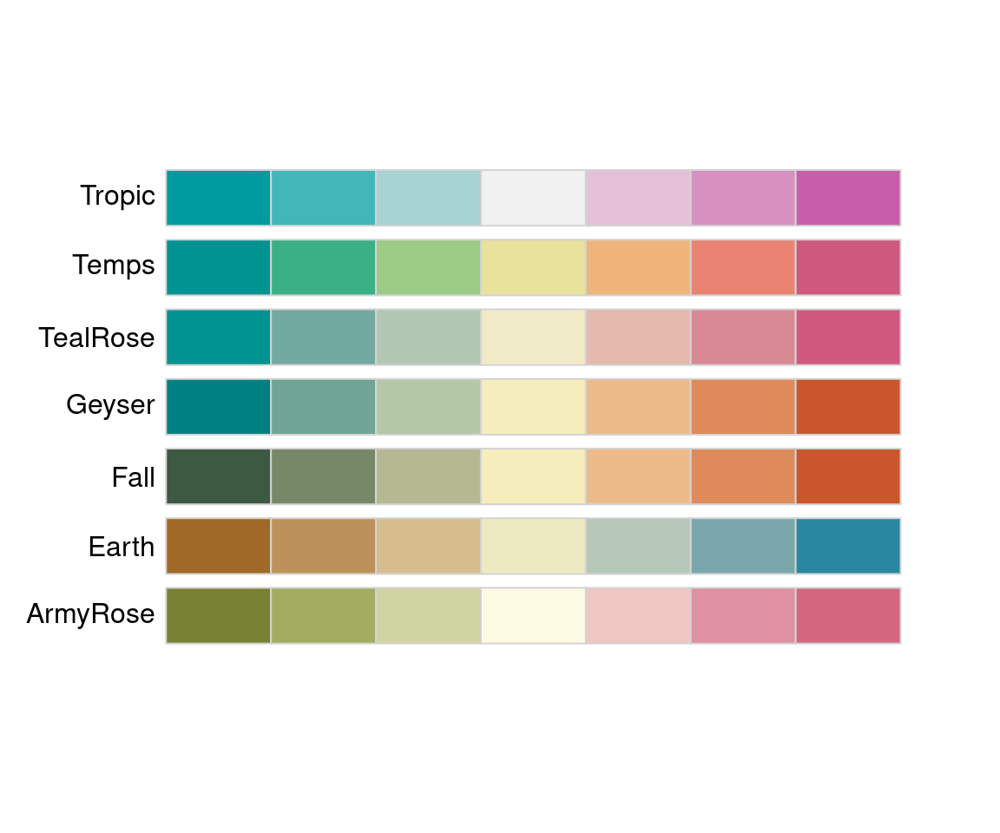
Colorblind friendly palettes
Earth
Tropic = carto_pal(7, "Earth")
colorblindcheck::palette_check(Tropic, plot = TRUE)
#> name n tolerance ncp ndcp min_dist mean_dist max_dist
#> 1 normal 7 12.5245 21 21 12.524500 27.12465 42.52298
#> 2 deuteranopia 7 12.5245 21 19 9.925406 27.22743 49.69037
#> 3 protanopia 7 12.5245 21 18 10.651360 25.29796 42.30029
#> 4 tritanopia 7 12.5245 21 19 11.276739 30.63428 50.14043ArmyRose
Tropic = carto_pal(7, "ArmyRose")
colorblindcheck::palette_check(Tropic, plot = TRUE)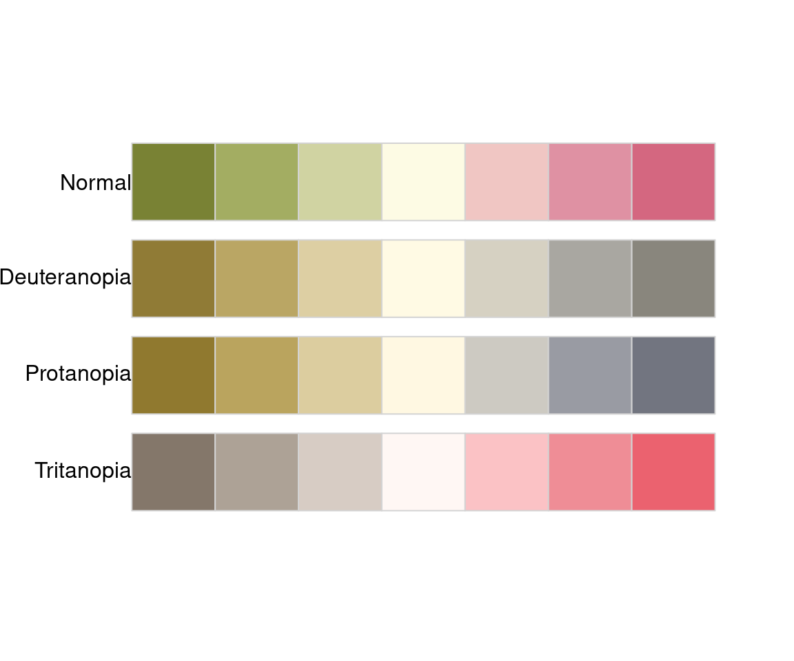
#> name n tolerance ncp ndcp min_dist mean_dist max_dist
#> 1 normal 7 10.75289 21 21 10.752894 31.11200 49.52187
#> 2 deuteranopia 7 10.75289 21 19 9.140434 19.18297 36.10251
#> 3 protanopia 7 10.75289 21 21 11.502952 23.77730 39.13187
#> 4 tritanopia 7 10.75289 21 19 9.748239 22.38031 35.99615Other
Tropic
Tropic = carto_pal(7, "Tropic")
colorblindcheck::palette_check(Tropic, plot = TRUE)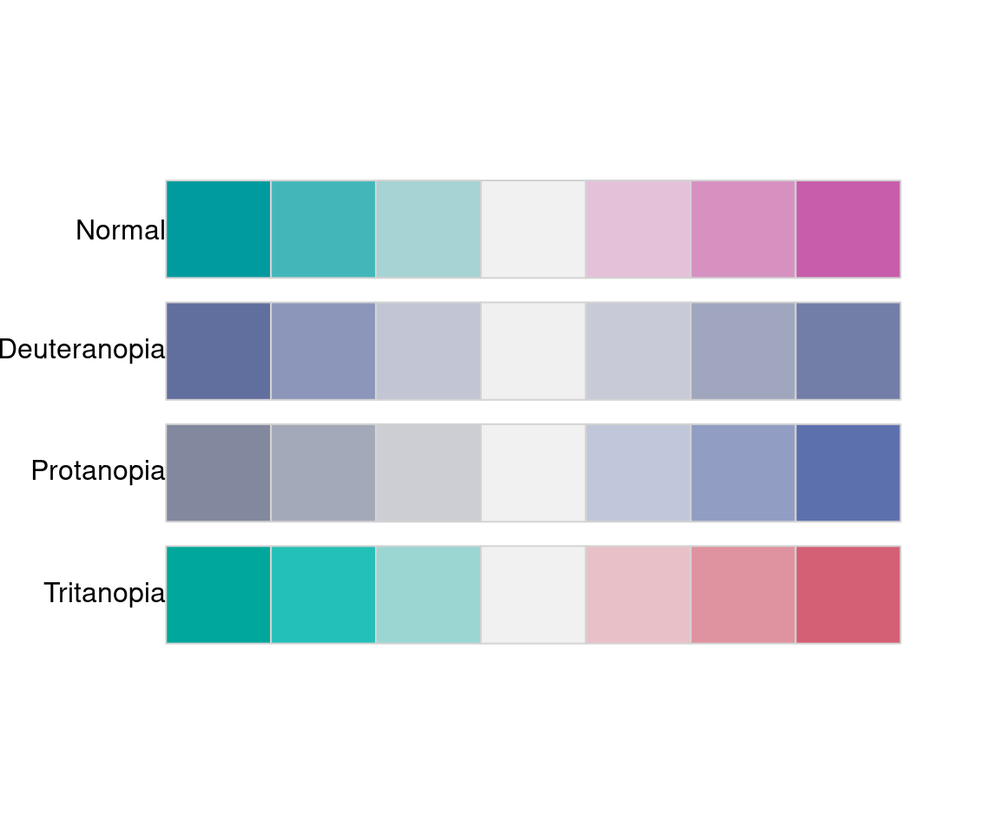
#> name n tolerance ncp ndcp min_dist mean_dist max_dist
#> 1 normal 7 8.818466 21 21 8.818466 30.64224 48.18967
#> 2 deuteranopia 7 8.818466 21 17 1.526308 17.93711 40.09834
#> 3 protanopia 7 8.818466 21 16 5.732018 17.76910 41.02769
#> 4 tritanopia 7 8.818466 21 20 7.339877 33.85156 61.03547Temps
Tropic = carto_pal(7, "Temps")
colorblindcheck::palette_check(Tropic, plot = TRUE)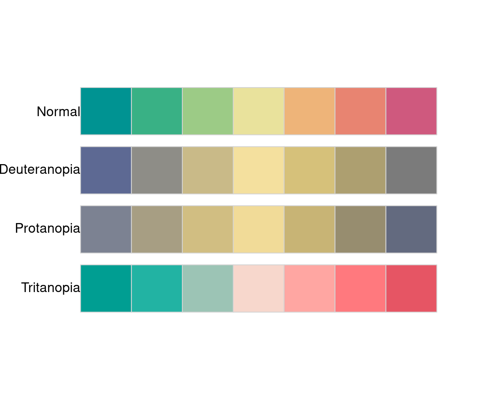
#> name n tolerance ncp ndcp min_dist mean_dist max_dist
#> 1 normal 7 15.00693 21 21 15.006928 37.11484 67.19813
#> 2 deuteranopia 7 15.00693 21 15 4.883780 23.60428 52.93715
#> 3 protanopia 7 15.00693 21 13 2.734375 22.26969 47.00405
#> 4 tritanopia 7 15.00693 21 17 6.440528 35.43208 63.15262TealRose
Tropic = carto_pal(7, "TealRose")
colorblindcheck::palette_check(Tropic, plot = TRUE)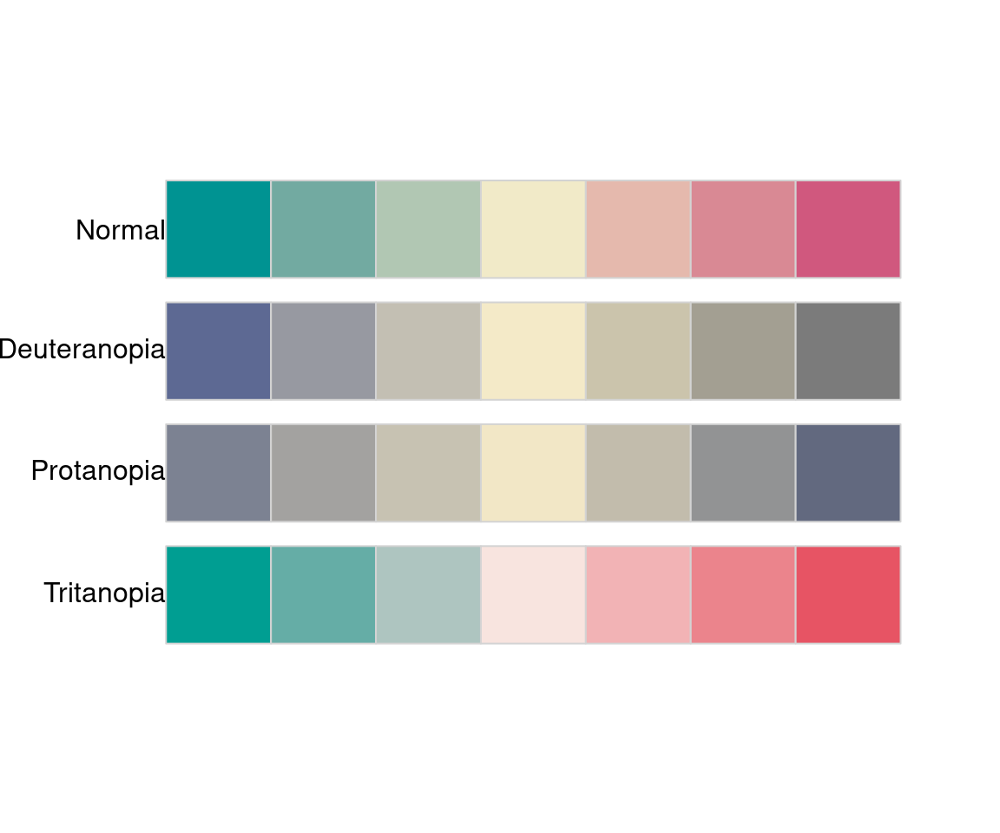
#> name n tolerance ncp ndcp min_dist mean_dist max_dist
#> 1 normal 7 11.77803 21 21 11.778027 32.65683 58.37099
#> 2 deuteranopia 7 11.77803 21 15 4.683555 21.04165 49.10003
#> 3 protanopia 7 11.77803 21 13 1.584331 19.03741 44.64430
#> 4 tritanopia 7 11.77803 21 18 8.517921 32.72778 61.32080Geyser
Tropic = carto_pal(7, "Geyser")
colorblindcheck::palette_check(Tropic, plot = TRUE)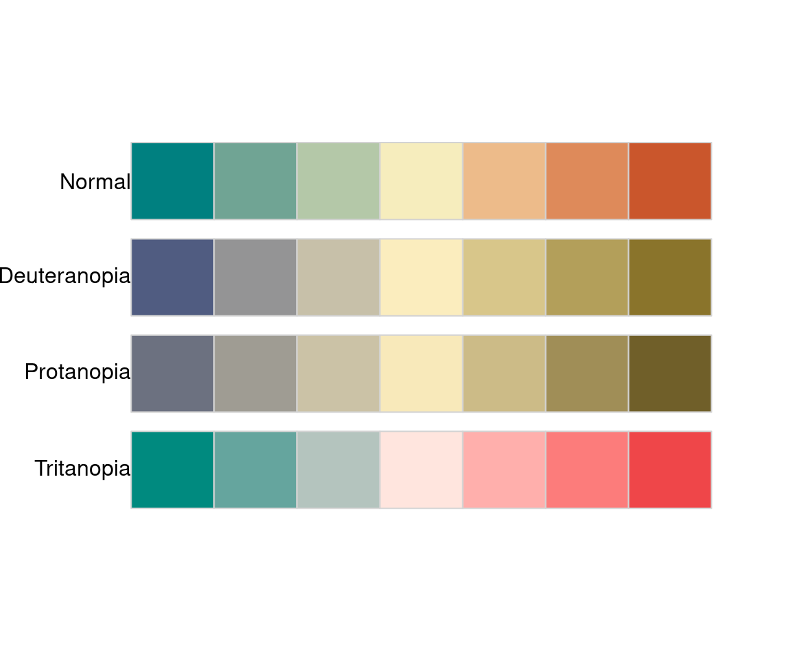
#> name n tolerance ncp ndcp min_dist mean_dist max_dist
#> 1 normal 7 13.88224 21 21 13.882238 30.98809 48.71079
#> 2 deuteranopia 7 13.88224 21 17 9.508345 26.69072 55.39319
#> 3 protanopia 7 13.88224 21 16 6.933528 23.48892 42.64056
#> 4 tritanopia 7 13.88224 21 18 11.535522 33.86947 59.65785Fall
Tropic = carto_pal(7, "Fall")
colorblindcheck::palette_check(Tropic, plot = TRUE)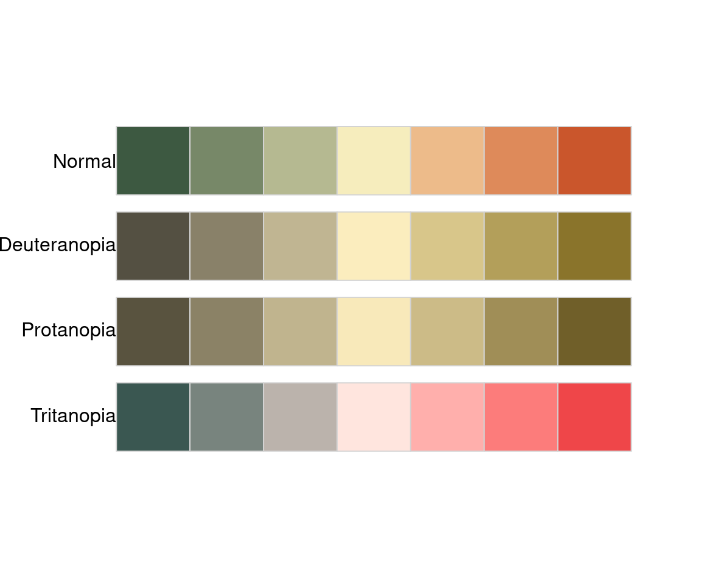
#> name n tolerance ncp ndcp min_dist mean_dist max_dist
#> 1 normal 7 13.76708 21 21 13.767081 30.25280 50.40550
#> 2 deuteranopia 7 13.76708 21 15 7.564794 22.66555 50.67787
#> 3 protanopia 7 13.76708 21 14 4.133047 22.21854 48.12287
#> 4 tritanopia 7 13.76708 21 19 11.535522 30.86059 55.80850Qualitative
display_carto_all(type = "qualitative")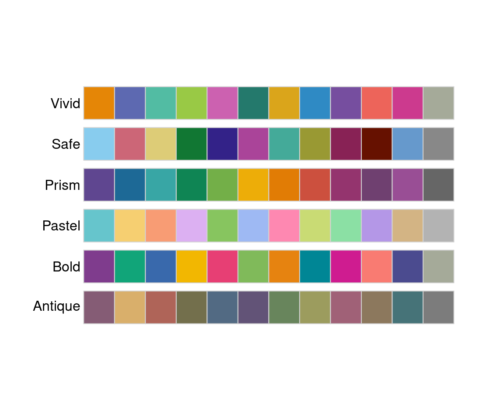
Colorblind friendly palettes
Safe
Safe = carto_pal(7, "Safe")
colorblindcheck::palette_check(Safe, plot = TRUE)
#> name n tolerance ncp ndcp min_dist mean_dist max_dist
#> 1 normal 7 19.81317 21 21 19.813167 44.29825 83.53756
#> 2 deuteranopia 7 19.81317 21 18 7.866014 35.84434 81.35039
#> 3 protanopia 7 19.81317 21 19 8.394665 36.11148 79.06596
#> 4 tritanopia 7 19.81317 21 20 12.894778 39.90235 65.87624Other
Vivid
Vivid = carto_pal(7, "Vivid")
colorblindcheck::palette_check(Vivid, plot = TRUE)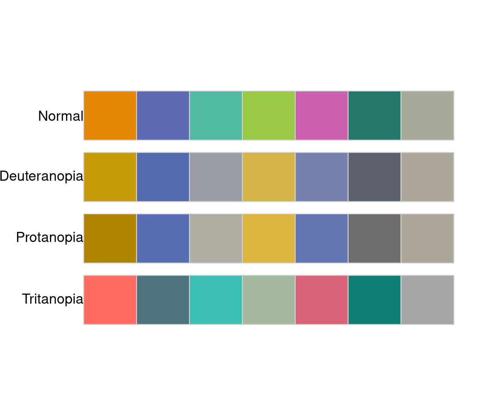
#> name n tolerance ncp ndcp min_dist mean_dist max_dist
#> 1 normal 7 19.09441 21 21 19.094412 38.74835 75.06609
#> 2 deuteranopia 7 19.09441 21 15 8.093030 29.60549 57.82830
#> 3 protanopia 7 19.09441 21 18 2.467907 29.50472 57.93880
#> 4 tritanopia 7 19.09441 21 17 12.910601 33.43425 60.52335Prism
Prism = carto_pal(7, "Prism")
colorblindcheck::palette_check(Prism, plot = TRUE)
#> name n tolerance ncp ndcp min_dist mean_dist max_dist
#> 1 normal 7 18.70177 21 21 18.701769 36.68691 67.26953
#> 2 deuteranopia 7 18.70177 21 17 1.893822 32.20324 66.02497
#> 3 protanopia 7 18.70177 21 18 7.310303 31.31282 63.33132
#> 4 tritanopia 7 18.70177 21 16 9.754820 30.89216 55.40387Pastel
Pastel = carto_pal(7, "Pastel")
colorblindcheck::palette_check(Pastel, plot = TRUE)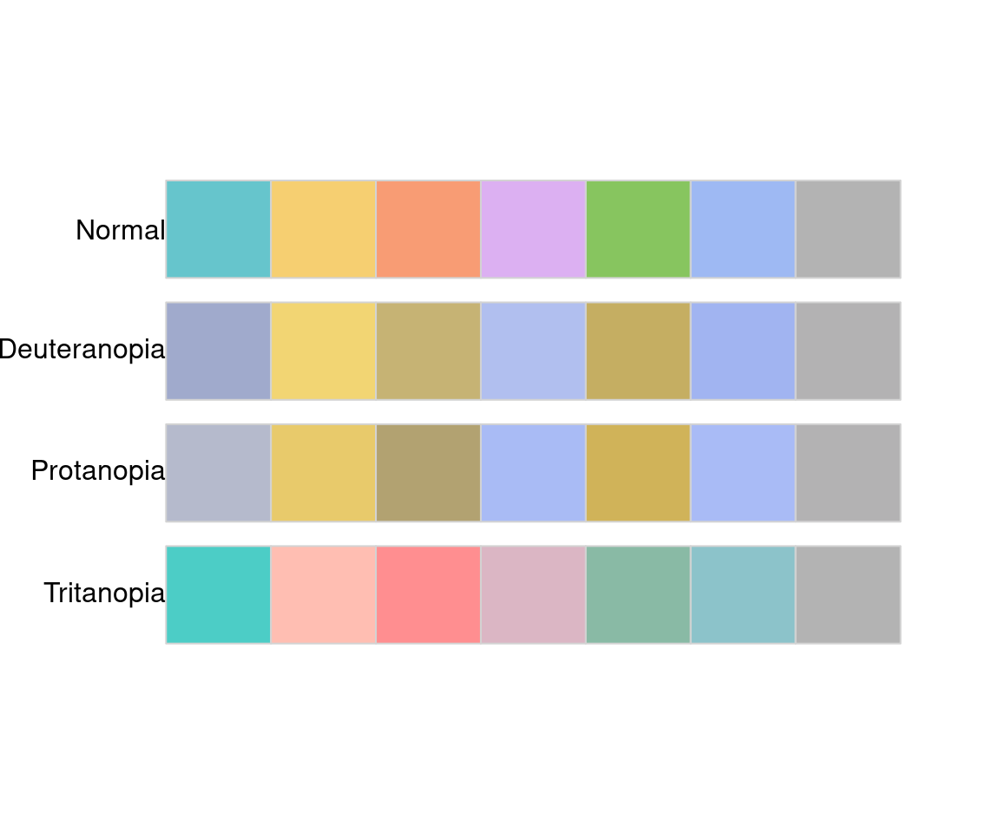
#> name n tolerance ncp ndcp min_dist mean_dist max_dist
#> 1 normal 7 18.11564 21 21 18.1156424 33.19801 63.55396
#> 2 deuteranopia 7 18.11564 21 13 2.9543162 25.51608 48.19588
#> 3 protanopia 7 18.11564 21 14 0.1542062 24.94636 46.65802
#> 4 tritanopia 7 18.11564 21 13 10.6175196 28.09163 54.81856Bold
Bold = carto_pal(7, "Bold")
colorblindcheck::palette_check(Bold, plot = TRUE)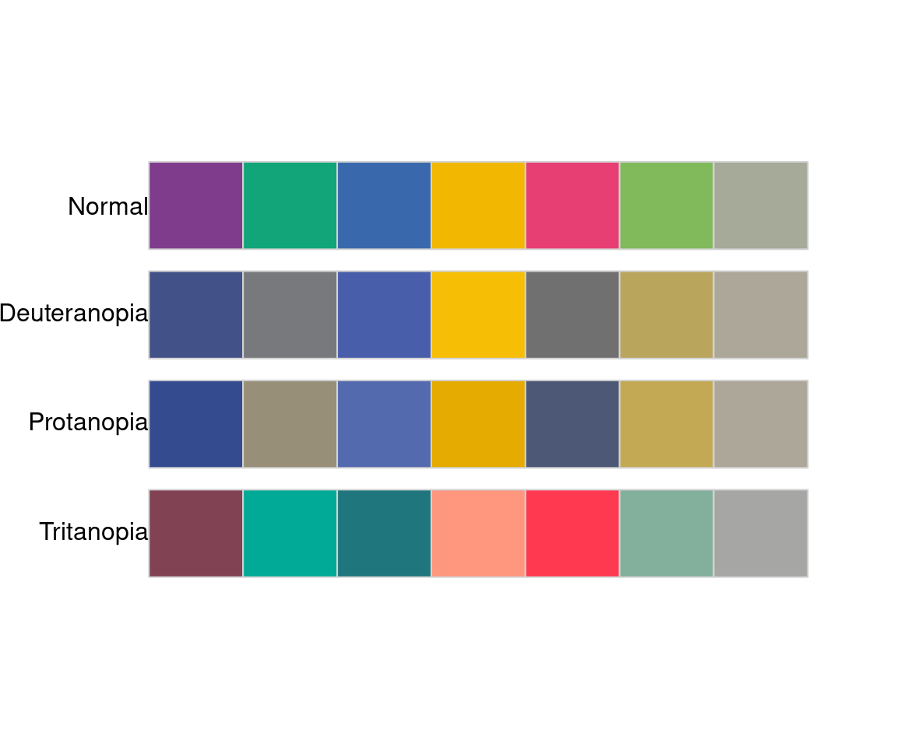
#> name n tolerance ncp ndcp min_dist mean_dist max_dist
#> 1 normal 7 16.72723 21 21 16.727231 44.47418 76.61599
#> 2 deuteranopia 7 16.72723 21 17 3.978365 31.19171 65.63992
#> 3 protanopia 7 16.72723 21 15 8.360214 33.99745 66.70550
#> 4 tritanopia 7 16.72723 21 19 11.378998 37.97693 67.41411Antique
Antique = carto_pal(7, "Antique")
colorblindcheck::palette_check(Antique, plot = TRUE)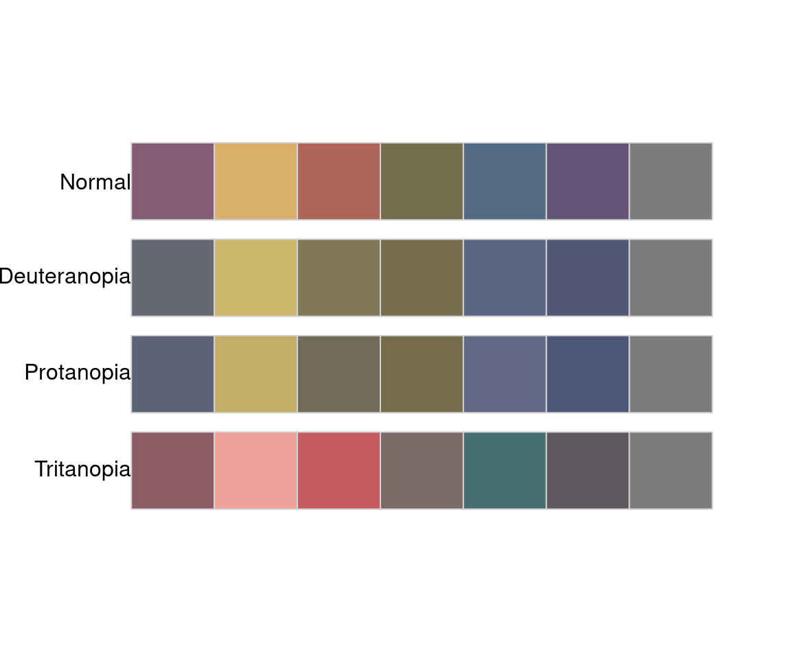
#> name n tolerance ncp ndcp min_dist mean_dist max_dist
#> 1 normal 7 10.70734 21 21 10.707344 27.24781 50.59054
#> 2 deuteranopia 7 10.70734 21 16 3.956045 22.65272 50.52633
#> 3 protanopia 7 10.70734 21 17 3.785169 21.86176 49.13983
#> 4 tritanopia 7 10.70734 21 19 10.034728 23.57062 45.83002Aggregation
display_carto_all(type = "aggregation")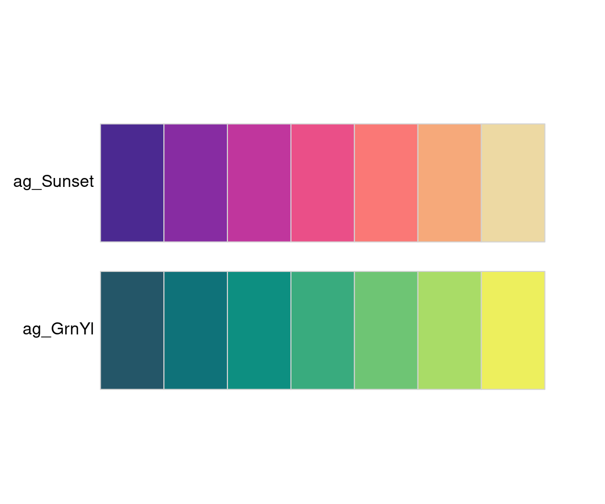
Colorblind friendly palettes
ag_Sunset
ag_Sunset = carto_pal(7, "ag_Sunset")
colorblindcheck::palette_check(ag_Sunset, plot = TRUE)
#> name n tolerance ncp ndcp min_dist mean_dist max_dist
#> 1 normal 7 11.29042 21 21 11.290421 37.45088 75.02318
#> 2 deuteranopia 7 11.29042 21 17 6.341253 36.51110 74.47224
#> 3 protanopia 7 11.29042 21 16 3.834725 35.77438 73.18032
#> 4 tritanopia 7 11.29042 21 18 5.783839 28.27076 60.53633ag_GrnYl
ag_GrnYl = carto_pal(7, "ag_GrnYl")
colorblindcheck::palette_check(ag_GrnYl, plot = TRUE)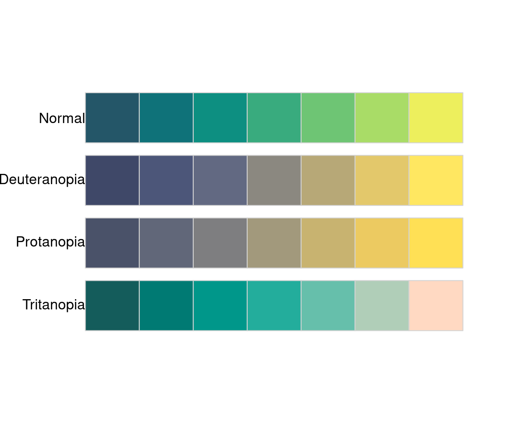
#> name n tolerance ncp ndcp min_dist mean_dist max_dist
#> 1 normal 7 11.29211 21 21 11.292112 31.02678 64.17769
#> 2 deuteranopia 7 11.29211 21 18 4.910664 34.05456 68.95625
#> 3 protanopia 7 11.29211 21 18 6.290447 29.75748 61.87479
#> 4 tritanopia 7 11.29211 21 17 7.001340 26.44322 56.18280